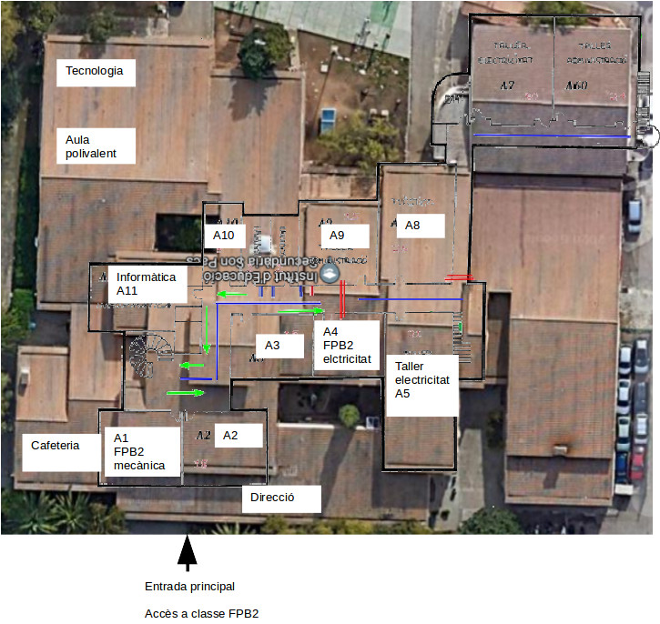
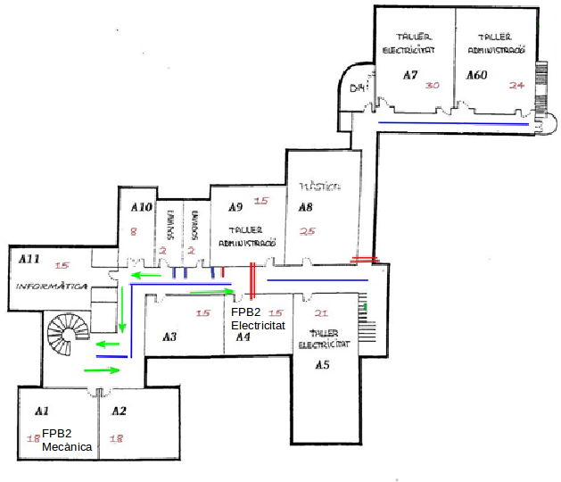

| Recursos |
FPB2 electricitat aula A7
FPB2 mecànica aula A1
Per accedir a les aules, l'alumnat d'FPB2 de mecànica i electricitat ha d'esperar al professor a la seva zona assignada al pati.
El professor recollirà l'alumnat i accedirà a les aules per l'entrada principal del centre. Per pujar del vestíbul a la primera planta, on es troben les aules A1 i A4, s'ha de prendre l'escala de cargol.
  Tornar
Tornar